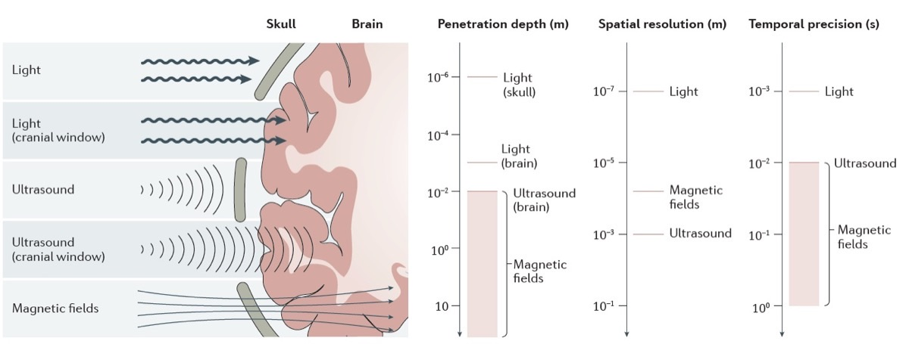
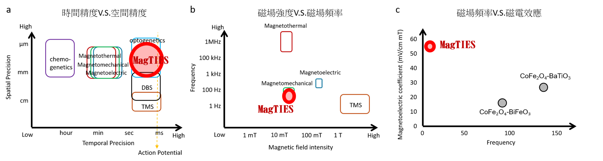
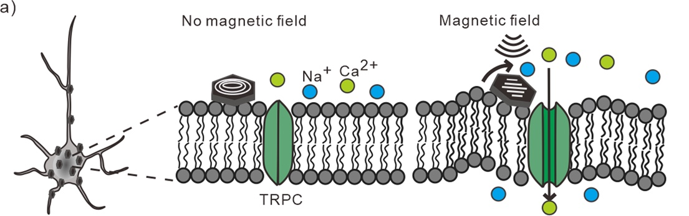
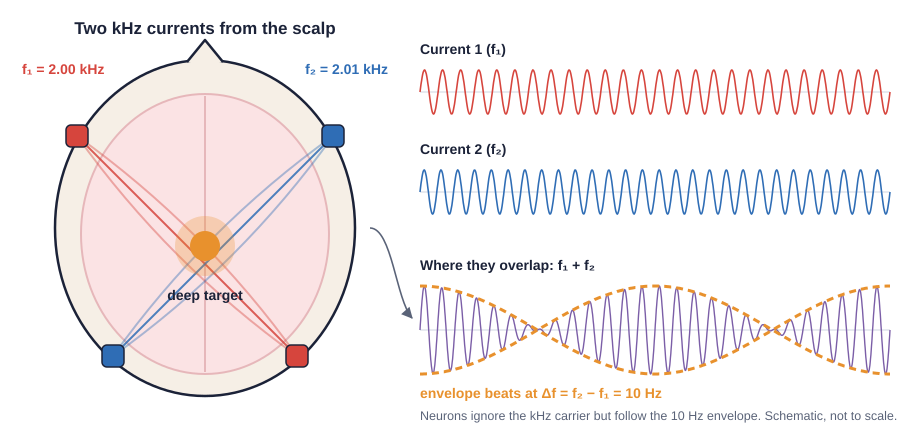
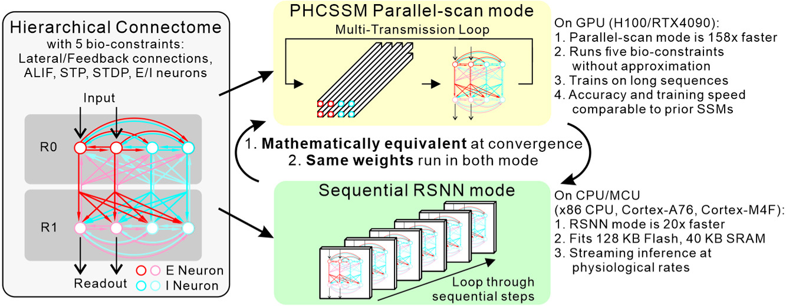
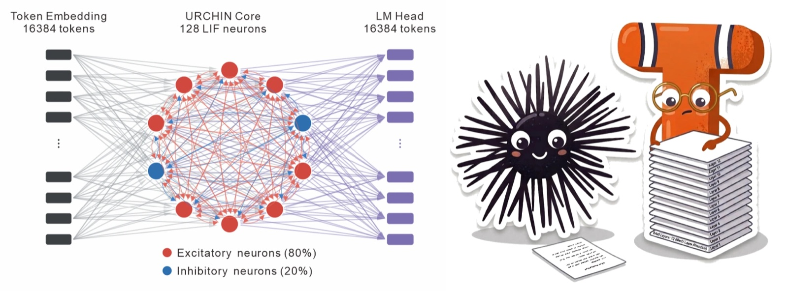

Research
Engineering precise, wireless control of the brain
Neuromodulation matters for treating neurological disease, for brain–computer interfaces that write back into the brain, and for basic neuroscience and NeuroAI. Today, precise control of a specific cell type in a small region usually needs hardware implanted in the brain. We want both at once: minimally invasive, and precise.
Why magnetic fields
Fields that pass through the skull
Electrical stimulation reaches deep tissue but excites every neuron along the way, which causes side effects. Light (optogenetics) and ultrasound (sonogenetics) fade with depth. Magnetic fields pass through tissue almost untouched, so they can be delivered wirelessly to deep brain regions.
Neurons do not respond to magnetic fields directly. That is what makes the fields safe, and it means we must convert the field into something a neuron can feel. We use magnetic nanoparticles that turn the field into heat, force, torque or electricity, sometimes paired with a receptor expressed by genetic engineering, to switch specific neurons on or off in freely moving mice.

Wireless deep brain stimulation
MagTIES
Magnetic-driven Torque-Induced Electrical Stimulation is the first magnetoelectric nanostimulation driven by torque. It activates neurons within milliseconds, 100 to 1000 times faster than earlier magnetic approaches, and it is so far the only wireless deep brain stimulation that can quickly and effectively set the frequency of oscillations in deep brain regions.
- Precise: millisecond timing and micrometre spatial precision, beyond conventional DBS and TMS and faster than chemogenetic, magnetothermal and magnetomechanical methods.
- Low power: works at 50 mT and 10 Hz, lower field strength and frequency than TMS or other magnetic methods.
- Efficient: a strong magnetoelectric effect from a low-frequency field.
Cheng et al., Adv. Healthcare Mater. 2025 (inside back cover)


Wireless deep brain stimulation
Magnetomechanical stimulation
Magnetic nanodiscs twist and push in a weak alternating field. On the cell membrane, that force opens mechanosensitive ion channels. We showed wireless neuromodulation through cells' own TRPC channels, without adding a gene, and we now use nanodiscs to stimulate astrocytes selectively in the deep brain.
Su et al., Commun. Biol. 2022 · Cai, Wang & Chiang, bioRxiv 2026
Our open-source magnetic system generates these fields for cell culture and for untethered mice, and the CoilDesignTool helps others build their own coils.

Non-invasive stimulation
Temporal interference brain stimulation (TIBS)
Two high-frequency currents applied on the scalp are too fast for neurons to follow. Where they overlap deep in the brain, they beat at their difference frequency, and only there do neurons respond. We study how the beat frequency changes the balance of excitation and inhibition, and we build our own current stimulators with ramp settings that make TIBS safer and more effective.

NeuroAI
Neuromorphic computing
To stimulate a circuit well we need to know how it computes. We build spiking networks whose wiring comes from real connectomes and train them at scale. PHCSSM keeps biological constraints such as lateral and feedback connections, short-term plasticity and Dale's law inside a fully parallel recurrence. It can analyse time-series data such as EEG, power spiking language models, and train realistically reconstructed brain circuits, as in BeatTheFly, where a network wired from the fruit-fly mushroom body plays chess against you.
In 2026 our entry won Track 2 (compute efficiency) of the THOR × NeuroBench Challenge, reaching 69.7% accuracy with a 672-byte model. In Track 1 (accuracy) we finished just 0.5 percentage points behind the winner.


Expertise
Across disciplines
- Neuroscience
- Neurological disorders
- Nanotechnology
- Electrical engineering
- Electromagnetism
- Software engineering
- Genetic engineering
- Molecular biology
- Cell biology
- Animal behaviour
- Stereotactic surgery
- Calcium imaging
- Fiber photometry
- Electrophysiology
- Deep learning
- Image analysis